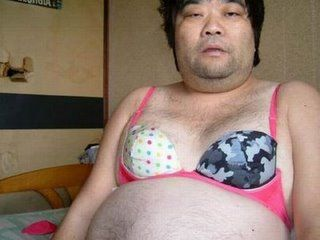

×


Hi, I'm Joseph Brunet, a PhD student in biomechanics at École des Mines de Saint-Étienne.
I'm interested in biomedical engineering and cardiovascular diseases. I'm part of the AArteMIS project. My work consits in obtaining and analyzing data from in situ mechanical testing of arteries in an X-ray micro-tomography environment. In particular, I investigate the mechanisms of aortic dissection.
I'm a curious mind, always searching for new experiences and problems to solve. This led me to explore different fields and the intersections between them. Few word (mountain / curious mind / ...) Current situation I've always been passionate about solving problem improving human On a more personal note, Mountain Climbing Skiing